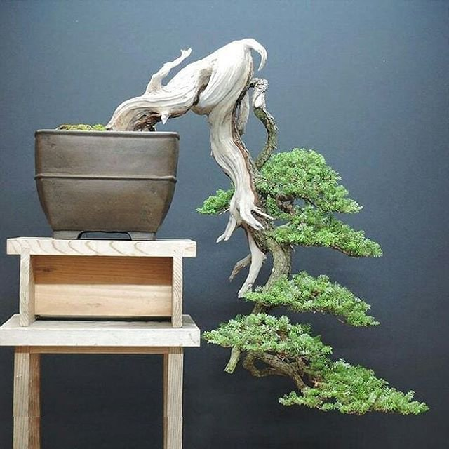
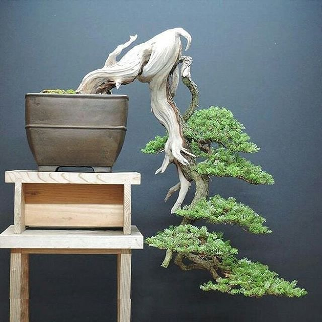
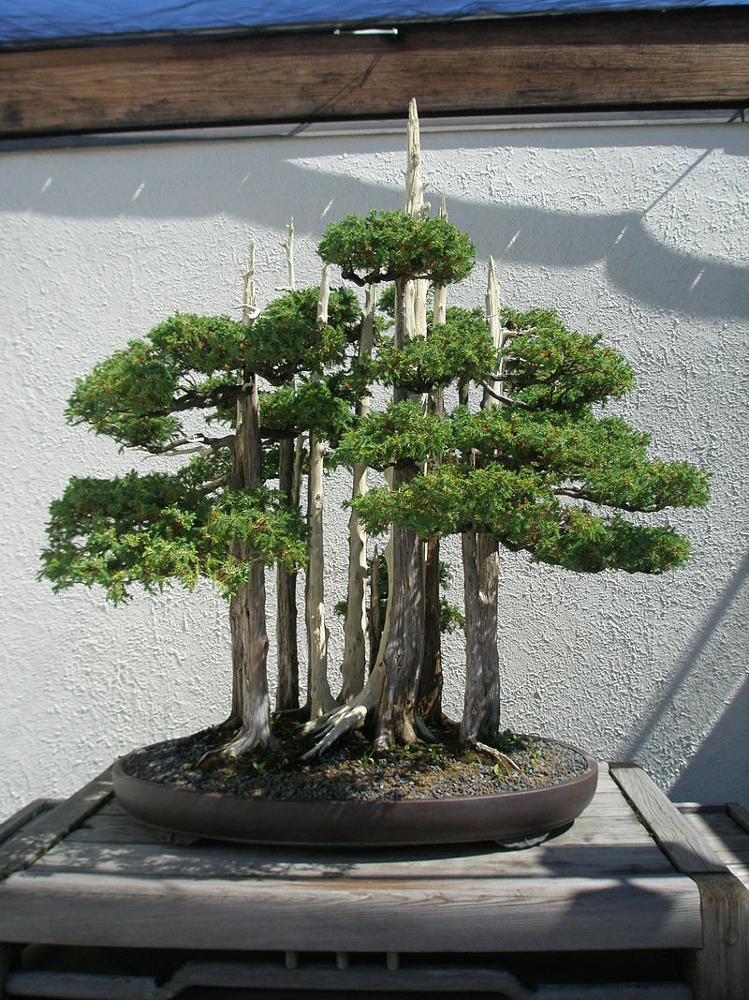
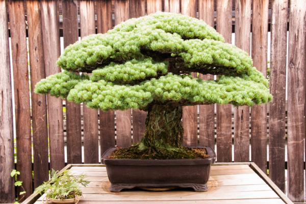
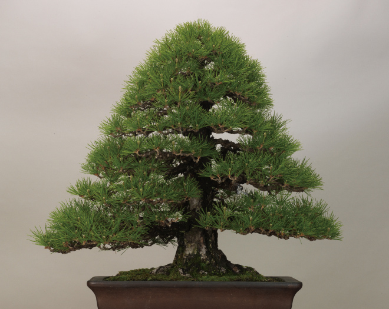
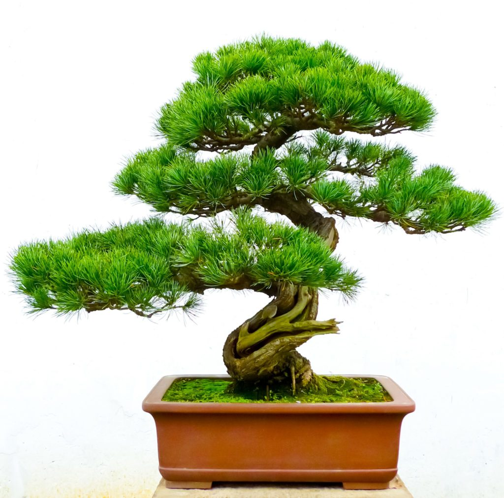
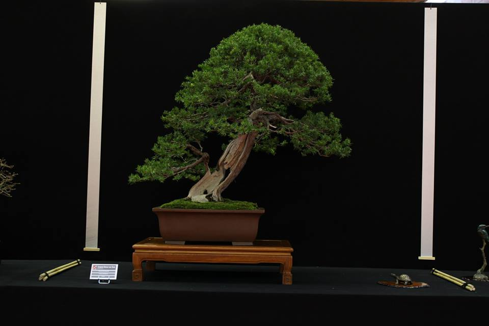
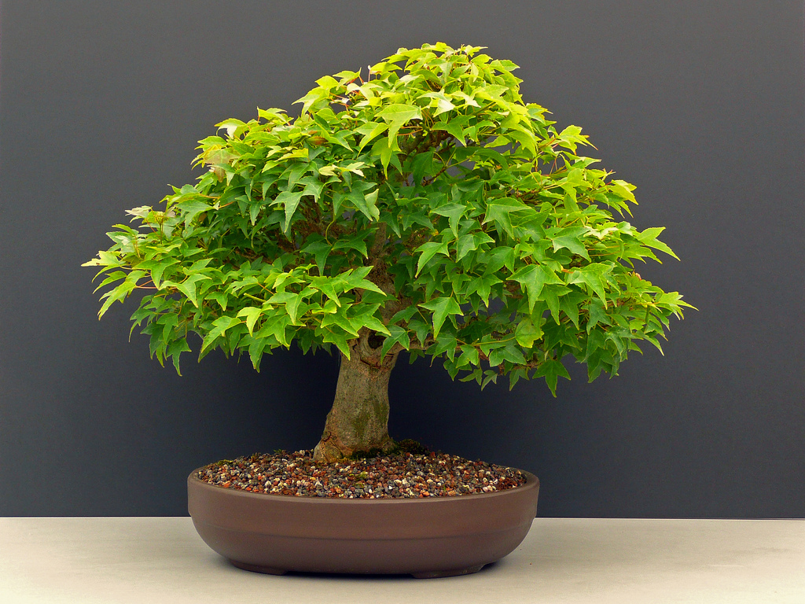
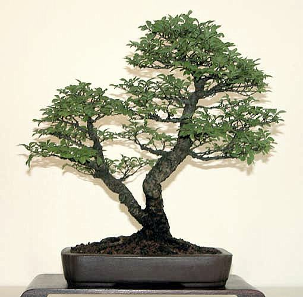
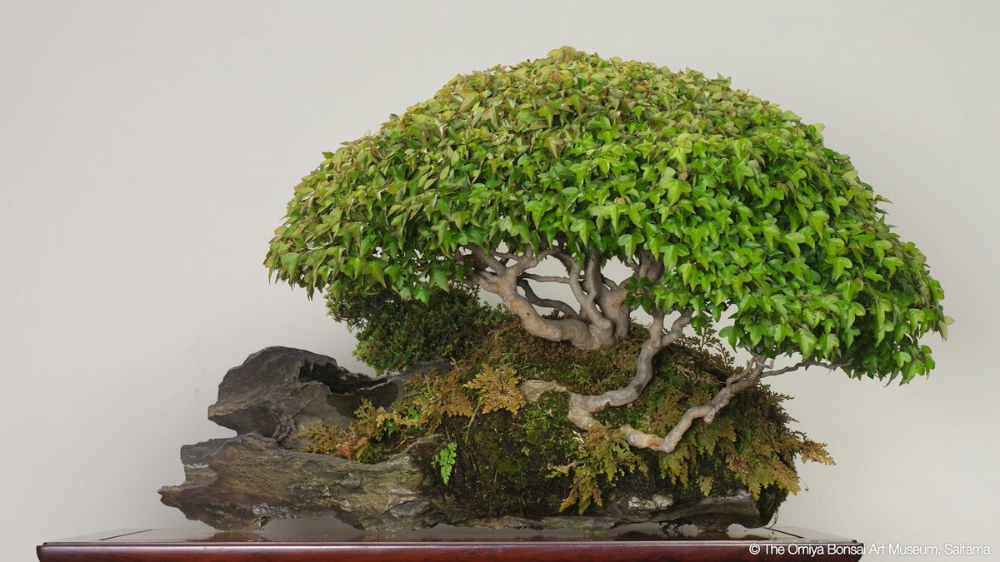

Kengai
El estilo kengai o cascada representa árboles que crecen en inclinación descendiente, con ramas bajas e incluso sin copa. En el han kengai o semi cascada, la inclinación es menos marcada y sí conservan la copa.
El estilo kengai o cascada representa árboles que crecen en inclinación descendiente, con ramas bajas e incluso sin copa. En el han kengai o semi cascada, la inclinación es menos marcada y sí conservan la copa.
Goshin (護神 protector de los espíritus) es un bonsái creado por el horticultor estadounidense John Y. Naka. Se trata de un pequeño bosque compuesto por once enebros de la China (Juniperus chinensis Foemina).
Bonsái Komono también llamados Kotate Mochi, el tamaño de estos bonsáis va de los 15 a los 31 cm. Se trata de bonsáis bastante sencillos de mantener, en los que habitualmente se busca un estilo de bosque frondoso o de fukinagashi.
En el tipo de bonsái Chokkan, se busca crear un tronco totalmente recto y de forma cilíndrica, con ramas que se alternan a cada lado, con ramas de profundidad entre ellas y una distancia de separación que se acorta conforme se acercan al ápice.
Con el bonsái Moyogui se busca un tronco curvo en cualquiera de los tres ejes, con ramas alternas a ambos lados que salen de las zonas curvas del tronco. También hay ramas de profundidad, y la distancia entre ramas se acorta conforme suben.
Shakan es un estilo inclinado, en que se busca un tronco que se mantenga recto pero inclinado respecto al suelo. El estilo de bonsái Shakan es habitual en pinos y otras coníferas, como este pino de la imagen.
Hokidachi también llamado paraguas o escoba. El estilo de bonsái Hokidachi busca formar una cúpula tupida como la de un paraguas, uniforme y que cubra por completo las ramas con sus hojas.
Se le llama sokan o sankan en función de si son dos o tres los árboles que lo forman. Se trata en realidad de un solo árbol, pero con una salida que se divide en la base en distintos troncos, creando la ilusión de árboles separados.
El estilo del bonsái ishitsuki se caracteriza por disponer de un árbol que crece sobre una roca, dejando sus raíces a la vista y descendiendo por ella hasta llegar a clavarse en la tierra para recoger los nutrientes necesarios.
